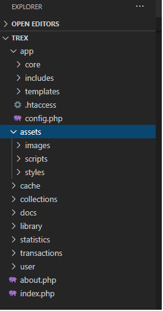

Scholarly HTML is a domain-specific rich document format built entirely on open standards that enables the interoperable exchange of scholarly articles in a manner that is compatible with off-the-shelf browsers. This document describes how TrEx (Track your expenses) project works. This documentation is made to be separated from the main project so it can be accessed without the need of an web server, just the browser.
TrEx is essentially an track your expenses simple web app where the user can create transactions (either income or expense) and view them in a table. He also can view some statistics based on data input.
Put the content in your XAMPP htdocs folder. Import the trex_db.sql dump file into your MySQL database to create the tables and primary key - foreign key relations. Find the config.php file in the app directory and change the database connection constants to match yours. Also don't forget to browse the files and chenge the root path of the includes there because of the absolute path used to include some files.
I will start with the directory structure:

Below are the project uml diagrams.
In development of this project I used PHPStorm as my primary Web development IDE, Visual Studio Code for quick code inspection for files not present in my project folder and general purpose experimentation. My local web server solution was XAMPP with MariaDB as the database. For testing and developing/inspecting the front-end of the app, Firefox Developer Edition was used. I guess it will work on other modern browsers too, but I didn't test it extensively. Finally, as my git online repo, GitHub was the obvious choice. Probably you found this on GitHub :) With one exception, all the developer tools are free and open-source!
Below is a small user guide
I would like to thank Scholarly HTML for this format.